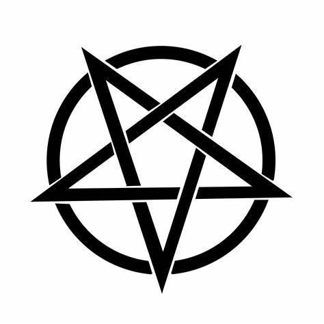

Kouzelnice?
Lea se vždy ráda zajímala o čarodějnictví. Doma má dokonce docela tlustou Wiccanskou příručku o čarodějnictví. Po celém bytě jsou perfektně rozmístěny svíce a menší svíčky. Nechybí ani vonné tyčinky.
Onehdá jsem v jejím šuplíku záhledl runové kameny a ten až nadlidský zájem o krystaly všeho druhu, hmm cožpak asi s nimi dělá? Pochybuji, že by to mohla bát jen nějaká dětská hra.
Jednou mi Lea předpověděla budoucnost z tarotek, takovou moc má čarodějka jedna.
A nakonec její samotná čarokrásná postava, může tohle snad být člověk? Spíše anděl, bohyně, či jiná vyšší forma.
